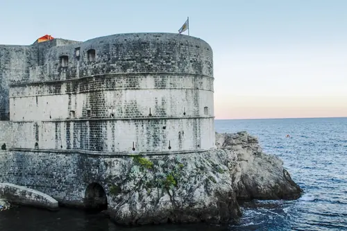
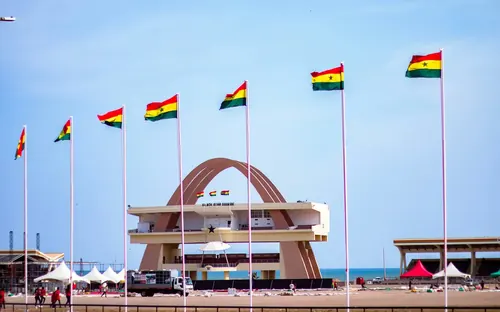
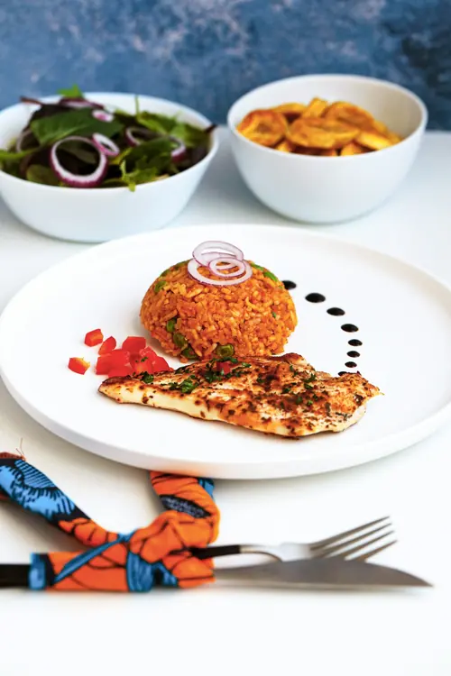
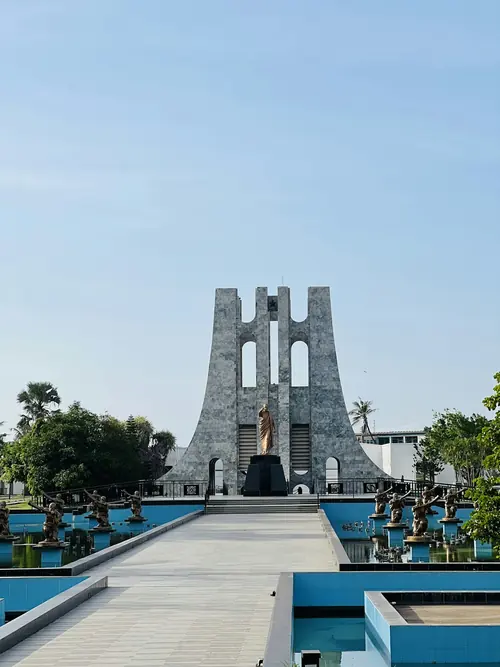

Destination
Cape Coast Castle
A UNESCO World Heritage site and one of Ghana's most visited — and most sobering — historic landmarks on the Atlantic coast.
Discover Ghana
Known as the "Gateway to Africa," Ghana is one of West Africa's most welcoming and accessible destinations. From the historic forts along its Atlantic coastline to the rainforest canopy of the Central Region and the wide savannahs of the north, Ghana packs an extraordinary range of landscapes and history into a country roughly the size of the United Kingdom.
This guide is built for first-time visitors — whether you're a tourist planning your first trip, a member of the diaspora reconnecting with the country, or a student or missionary about to be assigned here. Explore the destinations and dishes that make Ghana worth visiting, save your favorites, and reach out when you're ready to plan the details.

Ghana was the first sub-Saharan African country to gain independence from colonial rule, in 1957, and that history of leadership runs through the country's culture today. Visitors come for the beaches of the Atlantic coast, the sobering history preserved at coastal forts like Cape Coast and Elmina, the walk above the rainforest canopy at Kakum National Park, and the chance to see elephants up close at Mole National Park in the north. English is Ghana's official language, the currency is the Ghanaian Cedi, and the country is widely regarded as one of the safest and most politically stable in the region — making it an approachable first stop in West Africa.
Three highlights from the full guide — see everything, filter by category, and save your favorites on the Explore Ghana page.

A UNESCO World Heritage site and one of Ghana's most visited — and most sobering — historic landmarks on the Atlantic coast.

A smoky, tomato-based rice dish and the centerpiece of celebrations across West Africa.

The resting place and memorial park of Ghana's first president, in the heart of Accra.